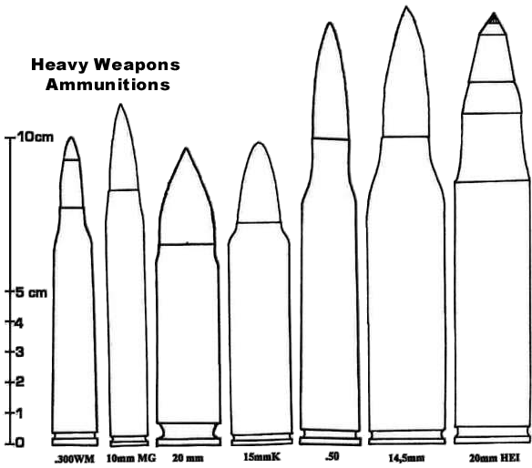

The following ammunition is exclusively for military use (except for the first one, which is a large hunting caliber), so there is no need to send your characters to the local gun shop to buy some. Even heavier ammunitions exist, but it's then necessary to call them shells!
| Abbreviation .338LM |
Designation .338 Lapua Magnum |
Damage 7D6+2 |
Cost of 10 15 eb |
AP (Armor Piercing) : halve armor value, normal damage beyond armor.

The principle of electrothermal ammunition is simple : it involves passing a very intense current through water. The water vaporizes instantaneously and the energy released expels the projectile with a power greater than that released by an equivalent volume of powder. Advances in battery technology have made this discovery possible, although the use of such weapons in automatic fire is still very rare. An electrothermal weapon has several advantages : it is quieter, even if the detonation is clearly audible at 200 meters, it does not emit a flame, which makes it more discreet at night. During the day, however, the cloud of vapor expelled from the weapon clearly identifies the shooter.
Electrothermal weapons are, with the exception of the less powerful ones, forbidden to carry.
| Abbreviation 5.2 mm |
Designation 5.2 mm Electrothermal Tsunami |
Damage 2D6+3 |
Cost of 10 $5 |